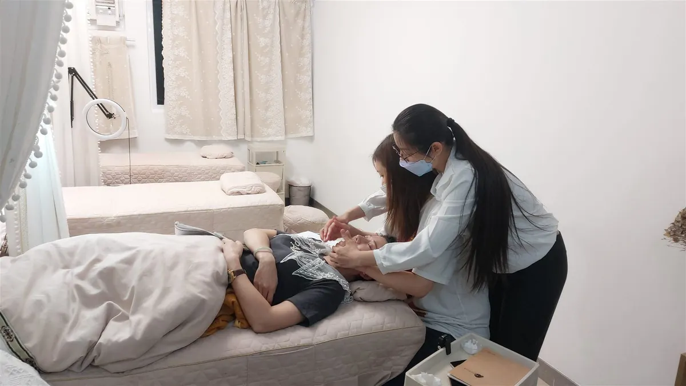
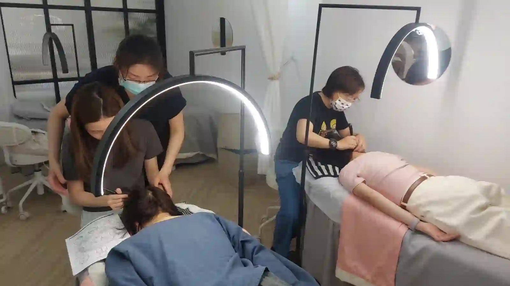

The Bojin Journal · Rituals & routines
A 4-Week Face Countdown Before a Wedding or Reunion
There's a photo coming. A daughter's wedding, a class reunion, a milestone birthday, the kind of day you'll look back on in pictures for years. Most women handle it the same doomed way: nothing for weeks, then a frantic pile of masks and gadgets the night before, and skin that shows up flushed and puffy for its trouble. There's a calmer way, and it starts by treating the calendar like a plan instead of a panic.
Why the countdown beats the cram
A rested, awake face isn't something you can force into existence overnight. Push too hard the night before and you often get the opposite of what you wanted: a flushed, slightly swollen face that needed calm, not a workout. The look you actually want is built the way anything gentle is built, a little at a time, so that by the day itself it's simply how your face is, not a fragile trick that might not hold.
Treat the four weeks like a countdown, not a cram. Weeks build the steady, rested baseline; the final days only maintain it. The night before should be your lightest touch, not your heaviest, because the work was already done in the weeks behind you.

The week-by-week plan
Two or three gentle sessions a week throughout, with real rest days between. Here's what each week is for.

Week 4, four weeks out: settle in and take a photo
Start your two-to-three-a-week rhythm and snap a plain, same-light photo now. This is also the only safe window for anything new, a facial, a product trial, since a reaction has four weeks to calm. Nothing new after this week.
Week 3, three weeks out: build the habit
Keep the rhythm steady and work your whole routine, jaw and neck, cheeks, brow, eyes. This is the quiet week where consistency does its work and you're tempted to think nothing's happening. Keep going.
Week 2, two weeks out: focus where it counts
By now you know which area photographs worst for you. Give it a little extra attention in each session, jaw and neck for a softer profile, under-eyes for a rested look, whatever your camera keeps showing you.
Week 1, the final week: lighten up and drain
Ease off the intensity. Keep sessions gentle and drainage-focused, finishing every one with slow sweeps down the neck. This is the week to prioritize sleep, water, and going easy on salt and alcohol, which do more against a puffy face now than any tool.
The day itself: light, warm, and early
A short, gentle sweep the morning of, ending down the neck, then warm palms and a few breaths. Do it early, not right before you leave, so any faint flush has time to settle into a natural glow.
An honest word on expectations
This won't remake your face, and it isn't meant to. What four weeks of gentle consistency gives you is a version of your own face that looks rested, a little less puffy, and awake, and looks that way reliably on the day rather than as a gamble. That's the real prize: not a different face in the photos, but yours on a genuinely good day, by design instead of by luck. The effect is gentle and temporary, which is exactly why the countdown, not the cram, is what delivers it when you need it.
The photo is coming either way. You can meet it with a night of panic and a flushed face, or with four quiet weeks behind you and a face that simply looks like you, rested. One of those you can actually count on.
Quick answers
Why not just do a lot the night before?
Because a heavy last-minute session can leave skin flushed or slightly puffy, the opposite of what you want on the day. A gentle habit built over four weeks gives a steadier, rested look that doesn't depend on a risky cram. The night-before step in this plan is deliberately light for exactly that reason.
I only have one week, is it worth starting?
Yes. You won't get the four-week settling, but even a week of gentle, consistent sessions can leave you looking a little less puffy and more awake on the day. Start where you are, keep it gentle, and skip any heavy last-minute experiment.
Can I try new products or treatments in these four weeks?
Not new ones close to the day. The four weeks before an event is the worst time to introduce a product or treatment your skin hasn't met, because a reaction has nowhere to calm down. Book any facials or trials early in the countdown, never in the final week, and keep the last stretch to what your skin already knows.
What matters most in the final 48 hours?
Sleep, water, and going easy on salt and alcohol do more for a puffy face than any tool in the final stretch. Keep your bojin light and drainage-focused, get the rest, and let the four weeks of consistency carry the look rather than a last-minute push.
Start the countdown right
The whole plan rests on gentle, consistent sessions, so getting the basics right in week four matters most. My free 3-minute video walks through a proper session to build your countdown on.
Watch the free 3-min videoYu-Ting Lan is a Taiwan-based international bojin instructor and the founder of Héhé Studio. She has taught her bojin method to more than a thousand students, from complete beginners to grandmothers, across Taiwan, Hong Kong, and Malaysia.